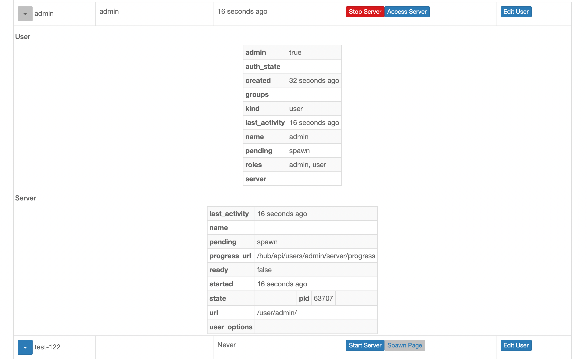

Changelog#
For detailed changes from the prior release, click on the version number, and
its link will bring up a GitHub listing of changes. Use git log on the
command line for details.
Unreleased#
3.0#
3.0.0 - 2022-09-08#
3.0 is a major upgrade, but a small one.
It qualifies as a major upgrade because of two changes:
It includes a database schema change (
jupyterhub --upgrade-db). The schema change should not be disruptive, but we’ve decided that any schema change qualifies as a major version upgrade.We’ve dropped support for Python 3.6, which reached End-of-Life in 2021. If you are using at least Python 3.7, this change should have no effect.
The database schema change is small and should not be disruptive, but downgrading is always harder than upgrading after a db migration, which makes rolling back the update more likely to be problematic.
Changes in RBAC#
The biggest changes in 3.0 relate to JupyterHub RBAC, which also means they shouldn’t affect most users. The users most affected will be JupyterHub admins using JupyterHub roles extensively to define user permissions.
After testing 2.0 in the wild,
we learned that we had used roles in a few places that should have been scopes.
Specifically, OAuth tokens now have scopes instead of roles
(and token-issuing oauth clients now have allowed_scopes instead of allowed_roles).
The consequences should be fairly transparent to users,
but anyone who ran into the restrictions of roles in the oauth process
should find scopes easier to work with.
We tried not to break anything here, so any prior use of roles will still work with a deprecation,
but the role will be resolved immediately at token-issue time,
rather than every time the token is used.
This especially came up testing the new Custom scopes feature. Authors of JupyterHub-authenticated services can now extend JupyterHub’s RBAC functionality to define their own scopes, and assign them to users and groups via roles. This can be used to e.g. limit student/grader/instructor permissions in a grading service, or grant instructors read-only access to their students’ single-user servers starting with upcoming Jupyter Server 2.0.
Further extending granular control of permissions,
we have added !service and !server filters for scopes (:ref:self-referencing-filters),
like we had for !user.
Access to the admin UI is now governed by a dedicated admin-ui scope,
rather than combined admin:servers and admin:users in 2.0.
More info in ref{available-scopes-target}.
More highlights#
The admin UI can now show more detailed info about users and their servers in a drop-down details table:

Several bugfixes and improvements in the new admin UI.
Direct access to the Hub’s database is deprecated. We intend to change the database connection lifecycle in the future to enable scalability and high-availability (HA), and limiting where connections and transactions can occur is an important part of making that possible.
Lots more bugfixes and error-handling improvements.
New features added#
include stopped servers in user model #3909 (@minrk, @consideRatio)
allow HubAuth to be async #3883 (@minrk, @consideRatio, @sgibson91)
add ‘admin-ui’ scope for access to the admin ui #3878 (@minrk, @GeorgianaElena, @manics)
store scopes on oauth clients, too #3877 (@minrk, @consideRatio, @manics)
!service and !server filters #3851 (@minrk, @consideRatio)
allow user-defined custom scopes #3713 (@minrk, @consideRatio, @manics)
Enhancements made#
Integrate Pagination API into Admin JSX #4002 (@naatebarber, @minrk)
add correct autocomplete fields for login form #3958 (@minrk, @consideRatio)
Tokens have scopes instead of roles #3833 (@minrk, @consideRatio)
Bugs fixed#
Use correct expiration labels in drop-down menu on token page. #4022 (@possiblyMikeB, @consideRatio)
avoid database error on repeated group name in sync_groups #4019 (@minrk, @manics)
reset offset to 0 on name filter change #4018 (@minrk, @consideRatio)
admin: avoid redundant client-side username validation in edit-user #4016 (@minrk, @consideRatio)
restore trimming of username input #4011 (@minrk, @consideRatio)
nbclassic extension name has been renamed #3971 (@minrk, @consideRatio)
Fix disabling of individual page template announcements #3969 (@consideRatio, @manics, @minrk)
validate proxy.extra_routes #3967 (@minrk, @consideRatio)
FreeBSD, missing -n for pw useradd #3953 (@silenius, @minrk, @manics)
admin: Hub is responsible for username validation #3936 (@minrk, @consideRatio, @NarekA, @yuvipanda)
admin: Fix spawn page link for default server #3935 (@minrk, @consideRatio, @benz0li)
let errors raised in an auth_state_hook halt spawn #3908 (@minrk, @consideRatio)
Maintenance and upkeep improvements#
Test 3.11 #4013 (@minrk, @consideRatio)
Avoid IOLoop.current in singleuser mixins #3992 (@minrk, @consideRatio)
Increase stacklevel for decorated warnings #3978 (@minrk, @consideRatio)
Bump Dockerfile base image to 22.04 #3975 (@minrk, @consideRatio, @manics)
Avoid deprecated ‘IOLoop.current’ method #3974 (@minrk, @consideRatio, @manics)
switch to importlib_metadata for entrypoints #3937 (@minrk, @consideRatio)
pages.py: Remove unreachable code #3921 (@manics, @minrk, @consideRatio)
Use isort for import formatting #3852 (@minrk, @consideRatio, @choldgraf, @yuvipanda)
Documentation improvements#
document oauth_no_confirm in services #4012 (@minrk, @consideRatio)
Remove outdated cookie-secret note in security docs #3997 (@minrk, @consideRatio)
jupyter troubleshooting➡️jupyter troubleshoot#3903 (@manics, @minrk, @consideRatio)admin_accessno longer works as it is overridden by RBAC scopes #3899 (@manics, @minrk)Document the ‘display’ attribute of services #3895 (@yuvipanda, @minrk, @sgibson91)
remove apache NE flag as it prevents opening folders and renaming fil… #3891 (@bbrauns, @minrk)
API and Breaking Changes#
Contributors to this release#
(GitHub contributors page for this release)
@ajcollett | @bbrauns | @benz0li | @betatim | @blink1073 | @brospars | @Carreau | @choldgraf | @cmd-ntrf | @code-review-doctor | @consideRatio | @cqzlxl | @dependabot | @fabianbaier | @GeorgianaElena | @github-actions | @hansen-m | @huage1994 | @jbaksta | @jgwerner | @jhermann | @johnkpark | @jwclark | @maluhoss | @manics | @mathematicalmichael | @meeseeksdev | @minrk | @mriedem | @naatebarber | @NarekA | @naveensrinivasan | @nicorikken | @nsshah1288 | @panruipr | @paulkerry1 | @possiblyMikeB | @pre-commit-ci | @rcthomas | @robnagler | @rpwagner | @ryogesh | @sgibson91 | @silenius | @SonakshiGrover | @superfive666 | @tharwan | @vpavlin | @willingc | @ykazakov | @yuvipanda | @zoltan-fedor
2.3#
2.3.1 - 2022-06-06#
This release includes a selection of bugfixes.
Bugs fixed#
use equality to filter token prefixes #3910 (@minrk, @yuvipanda)
ensure custom template is loaded with jupyter-server notebook extension #3919 (@minrk, @yuvipanda)
set default_url via config #3918 (@minrk, @yuvipanda)
Force add existing certificates #3906 (@fabianbaier, @minrk)
admin: make user-info table selectable #3889 (@johnkpark, @minrk, @naatebarber, @NarekA)
ensure _import_error is set when JUPYTERHUB_SINGLEUSER_APP is unavailable #3837 (@minrk, @consideRatio)
Contributors to this release#
(GitHub contributors page for this release)
@bbrauns | @betatim | @blink1073 | @brospars | @Carreau | @choldgraf | @consideRatio | @fabianbaier | @GeorgianaElena | @github-actions | @hansen-m | @jbaksta | @jgwerner | @jhermann | @johnkpark | @maluhoss | @manics | @mathematicalmichael | @meeseeksdev | @minrk | @mriedem | @naatebarber | @NarekA | @nicorikken | @nsshah1288 | @panruipr | @paulkerry1 | @rcthomas | @robnagler | @ryogesh | @sgibson91 | @SonakshiGrover | @tharwan | @vpavlin | @welcome | @willingc | @yuvipanda | @zoltan-fedor
2.3.0 - 2022-05-06#
Enhancements made#
Bugs fixed#
don’t confuse :// in next_url query params for a redirect hostname #3876 (@minrk, @GeorgianaElena)
Search bar disabled on admin dashboard #3863 (@NarekA, @minrk)
Do not store Spawner.ip/port on spawner.server during get_env #3859 (@minrk, @manics, @consideRatio)
ensure _import_error is set when JUPYTERHUB_SINGLEUSER_APP is unavailable #3837 (@minrk, @consideRatio)
Maintenance and upkeep improvements#
Use log.exception when logging exceptions #3882 (@yuvipanda, @minrk, @sgibson91)
Missing
fprefix on f-strings fix #3874 (@code-review-doctor, @minrk, @consideRatio)adopt pytest-asyncio asyncio_mode=’auto’ #3841 (@minrk, @consideRatio, @manics)
remove lingering reference to distutils #3835 (@minrk, @consideRatio)
Documentation improvements#
Fix typo in REST API link in README.md #3862 (@cmd-ntrf, @consideRatio)
The word
usedis duplicated in upgrade.md #3849 (@huage1994, @consideRatio)Some typos in docs #3843 (@minrk, @consideRatio)
Document version mismatch log message #3839 (@yuvipanda, @consideRatio, @minrk)
Contributors to this release#
(GitHub contributors page for this release)
@choldgraf | @cmd-ntrf | @code-review-doctor | @consideRatio | @dependabot | @GeorgianaElena | @github-actions | @huage1994 | @johnkpark | @jwclark | @manics | @minrk | @NarekA | @pre-commit-ci | @sgibson91 | @ykazakov | @yuvipanda
2.2#
2.2.2 2022-03-14#
2.2.2 fixes a small regressions in 2.2.1.
Bugs fixed#
Fix failure to update admin-react.js by re-compiling from our source #3825 (@NarekA, @consideRatio, @minrk, @manics)
Continuous integration improvements#
ci: standalone jsx workflow and verify compiled asset matches source code #3826 (@consideRatio, @NarekA)
Contributors to this release#
(GitHub contributors page for this release)
@consideRatio | @manics | @minrk | @NarekA
2.2.1 2022-03-11#
2.2.1 fixes a few small regressions in 2.2.0.
Bugs fixed#
Fix clearing cookie with custom xsrf cookie options #3823 (@minrk, @consideRatio)
Fix admin dashboard table sorting #3822 (@NarekA, @minrk, @consideRatio)
Maintenance and upkeep improvements#
allow Spawner.server to be mocked without underlying orm_spawner #3819 (@minrk, @yuvipanda, @consideRatio)
Documentation#
Add some docs on common log messages #3820 (@yuvipanda, @choldgraf, @consideRatio)
Contributors to this release#
(GitHub contributors page for this release)
@choldgraf | @consideRatio | @minrk | @NarekA | @yuvipanda
2.2.0 2022-03-07#
JupyterHub 2.2.0 is a small release. The main new feature is the ability of Authenticators to manage group membership, e.g. when the identity provider has its own concept of groups that should be preserved in JupyterHub.
The links to access user servers from the admin page have been restored.
New features added#
Enhancements made#
Add user token to JupyterLab PageConfig #3809 (@minrk, @manics, @consideRatio)
show insecure-login-warning for all authenticators #3793 (@satra, @minrk)
short-circuit token permission check if token and owner share role #3792 (@minrk, @consideRatio)
Named server support, access links in admin page #3790 (@NarekA, @minrk, @ykazakov, @manics)
Bugs fixed#
Keep Spawner.server in sync with underlying orm_spawner.server #3810 (@minrk, @manics, @GeorgianaElena, @consideRatio)
Replace failed spawners when starting new launch #3802 (@minrk, @consideRatio)
Log proxy’s public_url only when started by JupyterHub #3781 (@cqzlxl, @consideRatio, @minrk)
Documentation improvements#
Apache2 Documentation: Updates Reverse Proxy Configuration (TLS/SSL, Protocols, Headers) #3813 (@rzo1, @minrk)
Update example to not reference an undefined scope #3812 (@ktaletsk, @minrk)
Apache: set X-Forwarded-Proto header #3808 (@manics, @consideRatio, @rzo1, @tobi45)
idle-culler example config missing closing bracket #3803 (@tmtabor, @consideRatio)
Behavior Changes#
Stop opening PAM sessions by default #3787 (@minrk, @consideRatio)
Contributors to this release#
(GitHub contributors page for this release)
@blink1073 | @clkao | @consideRatio | @cqzlxl | @dependabot | @dtaniwaki | @fcollonval | @GeorgianaElena | @github-actions | @kshitija08 | @ktaletsk | @manics | @minrk | @NarekA | @pre-commit-ci | @rajat404 | @rcthomas | @ryogesh | @rzo1 | @satra | @thomafred | @tmtabor | @tobi45 | @ykazakov
2.1#
2.1.1 2022-01-25#
2.1.1 is a tiny bugfix release,
fixing an issue where admins did not receive the new read:metrics permission.
Bugs fixed#
add missing read:metrics scope to admin role #3778 (@minrk, @consideRatio)
Contributors to this release#
2.1.0 2022-01-21#
2.1.0 is a small bugfix release, resolving regressions in 2.0 and further refinements.
In particular, the authenticated prometheus metrics endpoint did not work in 2.0 because it lacked a scope.
To access the authenticated metrics endpoint with a token,
upgrade to 2.1 and make sure the token/owner has the read:metrics scope.
Custom error messages for failed spawns are now handled more consistently on the spawn-progress API and the spawn-failed HTML page.
Previously, spawn-progress did not relay the custom message provided by exception.jupyterhub_message,
and full HTML messages in exception.jupyterhub_html_message can now be displayed in both contexts.
The long-deprecated, inconsistent behavior when users visited a URL for another user’s server,
where they could sometimes be redirected back to their own server,
has been removed in favor of consistent behavior based on the user’s permissions.
To share a URL that will take any user to their own server, use https://my.hub/hub/user-redirect/path/....
Enhancements made#
relay custom messages in exception.jupyterhub_message in progress API #3764 (@minrk)
Add the capability to inform a connection to Alembic Migration Script #3762 (@DougTrajano)
Bugs fixed#
Maintenance and upkeep improvements#
Documentation improvements#
Contributors to this release#
(GitHub contributors page for this release)
@consideRatio | @dependabot | @DougTrajano | @IgorBerman | @minrk | @twalcari | @welcome
2.0#
2.0.2 2022-01-10#
2.0.2 fixes a regression in 2.0.1 causing false positives rejecting valid requests as cross-origin, mostly when JupyterHub is behind additional proxies.
Bugs fixed#
Maintenance and upkeep improvements#
Documentation improvements#
DOCS: Update theme configuration #3754 (@choldgraf)
DOC: Add note about allowed_users not being set #3748 (@choldgraf)
Contributors to this release#
(GitHub contributors page for this release)
@choldgraf | @consideRatio | @github-actions | @jakob-keller | @manics | @meeseeksmachine | @minrk | @pre-commit-ci | @welcome
2.0.1#
2.0.1 is a bugfix release, with some additional small improvements, especially in the new RBAC handling and admin page.
Several issues are fixed where users might not have the default ‘user’ role as expected.
Enhancements made#
Bugs fixed#
initialize new admin users with default roles #3735 (@minrk)
Fix error message about Authenticator.pre_spawn_start #3716 (@minrk)
admin: Pass Base Url #3715 (@naatebarber)
Grant role after user creation during config load #3714 (@a3626a)
Avoid clearing user role membership when defining custom user scopes #3708 (@minrk)
cors: handle mismatched implicit/explicit ports in host header #3701 (@minrk)
Maintenance and upkeep improvements#
Documentation improvements#
Contributors to this release#
(GitHub contributors page for this release)
@a3626a | @betatim | @consideRatio | @github-actions | @kylewm | @manics | @minrk | @naatebarber | @pre-commit-ci | @sgaist | @welcome
2.0.0#
JupyterHub 2.0 is a big release!
The most significant change is the addition of roles and scopes to the JupyterHub permissions model, allowing more fine-grained access control. Read more about it in the docs.
In particular, the ‘admin’ level of permissions should not be needed anymore,
and you can now grant users and services only the permissions they need, not more.
We encourage you to review permissions, especially any service or user with admin: true
and consider assigning only the necessary roles and scopes.
JupyterHub 2.0 requires an update to the database schema, so make sure to read the upgrade documentation and backup your database before upgrading.
stop all servers before upgrading
Upgrading JupyterHub to 2.0 revokes all tokens issued before the upgrade, which means that single-user servers started before the upgrade will become inaccessible after the upgrade until they have been stopped and started again. To avoid this, it is best to shutdown all servers prior to the upgrade.
Other major changes that may require updates to your deployment, depending on what features you use:
List endpoints now support pagination, and have a max page size, which means API consumers must be updated to make paginated requests if you have a lot of users and/or groups.
Spawners have stopped specifying any command-line options to spawners by default. Previously,
--ipand--portcould be specified on the command-line. From 2.0 forward, JupyterHub will only communicate options to Spawners via environment variables, and the command to be launched is configured exclusively viaSpawner.cmdandSpawner.args.
Other new features:
new Admin page, written in React. With RBAC, it should now be fully possible to implement a custom admin panel as a service via the REST API.
JupyterLab is the default UI for single-user servers, if available in the user environment. See more info in the docs about switching back to the classic notebook, if you are not ready to switch to JupyterLab.
NullAuthenticator is now bundled with JupyterHub, so you no longer need to install the
nullauthenticatorpackage to disable login, you can setc.JupyterHub.authenticator_class = 'null'.Support
jupyterhub --show-configoption to see your current jupyterhub configuration.Add expiration date dropdown to Token page
and major bug fixes:
Improve database rollback recovery on broken connections
and other changes:
Requests to a not-running server (e.g. visiting
/user/someuser/) will return an HTTP 424 error instead of 503, making it easier to monitor for real deployment problems. JupyterLab in the user environment should be at least version 3.1.16 to recognize this error code as a stopped server. You can temporarily opt-in to the older behavior (e.g. if older JupyterLab is required) by settingc.JupyterHub.use_legacy_stopped_server_status_code = True.
Plus lots of little fixes along the way.
2.0.0 - 2021-12-01#
New features added#
support inherited
--show-configflags from base Application #3559 (@minrk)Add expiration date dropdown to Token page #3552 (@dolfinus)
Support auto login when used as a OAuth2 provider #3488 (@yuvipanda)
Make JupyterHub Admin page into a React app #3398 (@naatebarber)
Stop specifying
--ipand--porton the command-line #3381 (@minrk)
Enhancements made#
Fail suspected API requests with 424, not 503 #3636 (@yuvipanda)
Reduce logging verbosity of ‘checking routes’ #3604 (@yuvipanda)
Remove a couple every-request debug statements #3582 (@minrk)
Validate Content-Type Header for api POST requests #3575 (@VaishnaviHire)
Improved Grammar for the Documentation #3572 (@eruditehassan)
Bugs fixed#
Forward-port fixes from 1.5.0 security release #3679 (@minrk)
raise 404 on admin attempt to spawn nonexistent user #3653 (@minrk)
new user token returns 200 instead of 201 #3646 (@joegasewicz)
Added base_url to path for jupyterhub-session-id cookie #3625 (@albertmichaelj)
Fix wrong name of auth_state_hook in the exception log #3569 (@dolfinus)
Stop injecting statsd parameters into the configurable HTTP proxy #3568 (@paccorsi)
explicit DB rollback for 500 errors #3566 (@nsshah1288)
Avoid zombie processes in case of using LocalProcessSpawner #3543 (@dolfinus)
Fix regression where external services api_token became required #3531 (@consideRatio)
Fix allow_all check when only allow_admin is set #3526 (@dolfinus)
Bug: save_bearer_token (provider.py) passes a float value to the expires_at field (int) #3484 (@weisdd)
Maintenance and upkeep improvements#
build jupyterhub/singleuser along with other images #3690 (@minrk)
Forward-port fixes from 1.5.0 security release #3679 (@minrk)
verify that successful login assigns default role #3674 (@minrk)
use v2 of jupyterhub/action-major-minor-tag-calculator #3672 (@minrk)
clarify some log messages during role assignment #3663 (@minrk)
Rename ‘all’ metascope to more descriptive ‘inherit’ #3661 (@minrk)
minor refinement of excessive scopes error message #3660 (@minrk)
deprecate instead of remove
@admin_onlyauth decorator #3659 (@minrk)Add pyupgrade –py36-plus to pre-commit config #3586 (@consideRatio)
pyupgrade: run pyupgrade –py36-plus and black on all but tests #3585 (@consideRatio)
pyupgrade: run pyupgrade –py36-plus and black on jupyterhub/tests #3584 (@consideRatio)
remove very old backward-compat for LocalProcess subclasses #3558 (@minrk)
release docker workflow: ‘branchRegex: ^\w[\w-.]*$’ #3509 (@manics)
exclude dependabot push events from release workflow #3505 (@minrk)
Documentation improvements#
docs: fix typo in proxy config example #3657 (@edgarcosta)
server-api example typo: trim space in token file #3626 (@minrk)
[doc] add example specifying scopes for a default role #3581 (@minrk)
Add detailed doc for starting/waiting for servers via api #3565 (@minrk)
doc: Mention a list of known proxies available #3546 (@AbdealiJK)
Update changelog for 1.4.2 in main branch #3539 (@consideRatio)
Retrospectively update changelog for 1.4.1 in main branch #3537 (@consideRatio)
Add research study participation notice to readme #3506 (@sgibson91)
Fix typo #3494 (@davidbrochart)
Add Chameleon to JupyterHub deployment gallery #3482 (@diurnalist)
Contributors to this release#
(GitHub contributors page for this release)
@0mar | @AbdealiJK | @albertmichaelj | @betatim | @bollwyvl | @choldgraf | @consideRatio | @cslocum | @danlester | @davidbrochart | @dependabot | @diurnalist | @dolfinus | @echarles | @edgarcosta | @ellisonbg | @eruditehassan | @icankeep | @IvanaH8 | @joegasewicz | @manics | @meeseeksmachine | @minrk | @mriedem | @naatebarber | @nsshah1288 | @octavd | @OrnithOrtion | @paccorsi | @panruipr | @pre-commit-ci | @rpwagner | @sgibson91 | @support | @twalcari | @VaishnaviHire | @warwing | @weisdd | @welcome | @willingc | @ykazakov | @yuvipanda
1.5#
JupyterHub 1.5 is a security release, fixing a vulnerability ghsa-cw7p-q79f-m2v7 where JupyterLab users with multiple tabs open could fail to logout completely, leaving their browser with valid credentials until they logout again.
A few fully backward-compatible features have been backported from 2.0.
1.5.0 2021-11-04#
New features added#
Backport #3636 to 1.4.x (opt-in support for JupyterHub.use_legacy_stopped_server_status_code) #3639 (@yuvipanda)
Backport PR #3552 on branch 1.4.x (Add expiration date dropdown to Token page) #3580 (@meeseeksmachine)
Backport PR #3488 on branch 1.4.x (Support auto login when used as a OAuth2 provider) #3579 (@meeseeksmachine)
Maintenance and upkeep improvements#
Documentation improvements#
Contributors to this release#
(GitHub contributors page for this release)
@choldgraf | @consideRatio | @manics | @meeseeksmachine | @minrk | @support | @welcome | @yuvipanda
1.4#
JupyterHub 1.4 is a small release, with several enhancements, bug fixes, and new configuration options.
There are no database schema changes requiring migration from 1.3 to 1.4.
1.4 is also the first version to start publishing docker images for arm64.
In particular, OAuth tokens stored in user cookies,
used for accessing single-user servers and hub-authenticated services,
have changed their expiration from one hour to the expiry of the cookie
in which they are stored (default: two weeks).
This is now also configurable via JupyterHub.oauth_token_expires_in.
The result is that it should be much less likely for auth tokens stored in cookies to expire during the lifetime of a server.
1.4.2 2021-06-15#
1.4.2 is a small bugfix release for 1.4.
Bugs fixed#
Fix regression where external services api_token became required #3531 (@consideRatio)
Bug: save_bearer_token (provider.py) passes a float value to the expires_at field (int) #3484 (@weisdd)
Maintenance and upkeep improvements#
Documentation improvements#
Fix typo #3494 (@davidbrochart)
Contributors to this release#
(GitHub contributors page for this release)
@consideRatio | @davidbrochart | @icankeep | @minrk | @weisdd
1.4.1 2021-05-12#
1.4.1 is a small bugfix release for 1.4.
Enhancements made#
Bugs fixed#
Maintenance and upkeep improvements#
ci: fix typo in environment variable #3457 (@consideRatio)
avoid re-using asyncio.Locks across event loops #3456 (@minrk)
ci: github workflow security, pin action to sha etc #3436 (@consideRatio)
Documentation improvements#
Fix documentation #3452 (@davidbrochart)
Contributors to this release#
(GitHub contributors page for this release)
@0mar | @betatim | @consideRatio | @danlester | @davidbrochart | @IvanaH8 | @manics | @minrk | @naatebarber | @OrnithOrtion | @support | @welcome
1.4.0 2021-04-19#
New features added#
Support Proxy.extra_routes #3430 (@yuvipanda)
login-template: Add a “login_container” block inside the div-container. #3422 (@olifre)
Allow customization of service menu via templates #3345 (@stv0g)
Add Spawner.delete_forever #3337 (@nsshah1288)
Allow to set spawner-specific hub connect URL #3326 (@dtaniwaki)
Make Authenticator Custom HTML Flexible #3315 (@dtaniwaki)
Enhancements made#
Log the exception raised in Spawner.post_stop_hook instead of raising it #3418 (@jiajunjie)
Don’t delete all oauth clients on startup #3407 (@yuvipanda)
Use ‘secrets’ module to generate secrets #3394 (@yuvipanda)
Allow cookie_secret to be set to a hexadecimal string #3343 (@consideRatio)
Clear tornado xsrf cookie on logout #3341 (@dtaniwaki)
always log slow requests at least at info-level #3338 (@minrk)
Bugs fixed#
Maintenance and upkeep improvements#
alpine dockerfile: avoid compilation by getting some deps from apk #3386 (@minrk)
Fix sqlachemy.interfaces.PoolListener deprecation for tests #3383 (@IvanaH8)
Update pre-commit hooks versions #3362 (@consideRatio)
move get_custom_html to base Authenticator class #3359 (@minrk)
[TST] Do not implicitly create users in auth_header #3344 (@minrk)
ci: github actions, allow for manual test runs and fix badge in readme #3324 (@consideRatio)
Documentation improvements#
Fix link to jupyterhub/jupyterhub-the-hard-way #3417 (@manics)
Added Azure AD as a supported authenticator. #3401 (@maxshowarth)
Fix the help related to the proxy check #3332 (@jiajunjie)
Mention Jupyter Server as optional single-user backend in documentation #3329 (@Zsailer)
Fix mixup in comment regarding the sync parameter #3325 (@andrewisplinghoff)
docs: fix simple typo, funciton -> function #3314 (@timgates42)
Contributors to this release#
(GitHub contributors page for this release)
@00Kai0 | @8rV1n | @akhilputhiry | @alexal | @analytically | @andreamazzoni | @andrewisplinghoff | @BertR | @betatim | @bitnik | @bollwyvl | @carluri | @Carreau | @consideRatio | @davidedelvento | @dhirschfeld | @dmpe | @dsblank | @dtaniwaki | @echarles | @elgalu | @eran-pinhas | @gaebor | @GeorgianaElena | @gsemet | @gweis | @hynek2001 | @ianabc | @ibre5041 | @IvanaH8 | @jhegedus42 | @jhermann | @jiajunjie | @jtlz2 | @kafonek | @katsar0v | @kinow | @krinsman | @laurensdv | @lits789 | @m-alekseev | @mabbasi90 | @manics | @manniche | @maxshowarth | @mdivk | @meeseeksmachine | @minrk | @mogthesprog | @mriedem | @nsshah1288 | @olifre | @PandaWhoCodes | @pawsaw | @phozzy | @playermanny2 | @rabsr | @randy3k | @rawrgulmuffins | @rcthomas | @rebeca-maia | @rebenkoy | @rkdarst | @robnagler | @ronaldpetty | @ryanlovett | @ryogesh | @sbailey-auro | @sigurdurb | @SivaAccionLabs | @sougou | @stv0g | @sudi007 | @support | @tathagata | @timgates42 | @trallard | @vlizanae | @welcome | @whitespaceninja | @whlteXbread | @willingc | @yuvipanda | @Zsailer
1.3#
JupyterHub 1.3 is a small feature release. Highlights include:
Require Python >=3.6 (jupyterhub 1.2 is the last release to support 3.5)
Add a
?state=filter for getting user list, allowing much quicker responses when retrieving a small fraction of users.statecan beactive,inactive, orready.prometheus metrics now include a
jupyterhub_prefix, so deployments may need to update their grafana charts to match.page templates can now be async!
1.3.0#
Enhancements made#
Bugs fixed#
Maintenance and upkeep improvements#
Documentation improvements#
Fix curl in jupyter announcements #3286 (@Sangarshanan)
Update services.md #3267 (@slemonide)
[Docs] Fix https reverse proxy redirect issues #3244 (@mhwasil)
Remove the extra parenthesis in service.md #3303 (@Sangarshanan)
Contributors to this release#
(GitHub contributors page for this release)
@0mar | @agp8x | @alexweav | @belfhi | @betatim | @cbanek | @cmd-ntrf | @coffeebenzene | @consideRatio | @danlester | @fcollonval | @GeorgianaElena | @ianabc | @IvanaH8 | @manics | @meeseeksmachine | @mhwasil | @minrk | @mriedem | @mxjeff | @olifre | @rcthomas | @rgbkrk | @rkdarst | @Sangarshanan | @slemonide | @support | @tlvu | @welcome | @yuvipanda
1.2#
1.2.2 2020-11-27#
Enhancements made#
Bugs fixed#
Maintenance and upkeep improvements#
Environment marker on pamela #3255 (@fcollonval)
Migrate from travis to GitHub actions #3246 (@consideRatio)
Documentation improvements#
Contributors to this release#
(GitHub contributors page for this release)
@alexweav | @belfhi | @betatim | @cmd-ntrf | @consideRatio | @danlester | @fcollonval | @GeorgianaElena | @ianabc | @IvanaH8 | @manics | @meeseeksmachine | @minrk | @mriedem | @olifre | @rcthomas | @rgbkrk | @rkdarst | @slemonide | @support | @welcome | @yuvipanda
1.2.1 2020-10-30#
Bugs fixed#
Contributors to this release#
1.2.0 2020-10-29#
JupyterHub 1.2 is an incremental release with lots of small improvements. It is unlikely that users will have to change much to upgrade, but lots of new things are possible and/or better!
There are no database schema changes requiring migration from 1.1 to 1.2.
Highlights:
Deprecate black/whitelist configuration fields in favor of more inclusive blocked/allowed language. For example:
c.Authenticator.allowed_users = {'user', ...}More configuration of page templates and service display
Pagination of the admin page improving performance with large numbers of users
Improved control of user redirect
Support for jupyter-server-based single-user servers, such as Voilà and latest JupyterLab.
Lots more improvements to documentation, HTML pages, and customizations
Enhancements made#
Make api_request to CHP’s REST API more reliable #3223 (@consideRatio)
Add a footer block + wrap the admin footer in this block #3136 (@pabepadu)
Allow JupyterHub.default_url to be a callable #3133 (@danlester)
Allow head requests for the health endpoint #3131 (@rkevin-arch)
Hide hamburger button menu in mobile/responsive mode and fix other minor issues #3103 (@kinow)
build jupyterhub/jupyterhub-demo image on docker hub #3083 (@minrk)
Add JupyterHub Demo docker image #3059 (@GeorgianaElena)
Warn if both bind_url and ip/port/base_url are set #3057 (@GeorgianaElena)
UI Feedback on Submit #3028 (@possiblyMikeB)
Support kubespawner running on a IPv6 only cluster #3020 (@stv0g)
Spawn with options passed in query arguments to /spawn #3013 (@twalcari)
SpawnHandler POST with user form options displays the spawn-pending page #2978 (@danlester)
Start named servers by pressing the Enter key #2960 (@jtpio)
Keep the URL fragments after spawning an application #2952 (@kinow)
make init_spawners check O(running servers) not O(total users) #2936 (@minrk)
Add favicon to the base page template #2930 (@JohnPaton)
Add support for Jupyter Server #2601 (@yuvipanda)
Bugs fixed#
Fix #2284 must be sent from authorization page #3219 (@elgalu)
avoid specifying default_value=None in Command traits #3208 (@minrk)
Prevent OverflowErrors in exponential_backoff() #3204 (@kreuzert)
update prometheus metrics for server spawn when it fails with exception #3150 (@yhal-nesi)
jupyterhub/utils: Load system default CA certificates in make_ssl_context #3140 (@chancez)
admin page sorts on spawner last_activity instead of user last_activity #3137 (@lydian)
Fix the services dropdown on the admin page #3132 (@pabepadu)
Don’t log a warning when slow_spawn_timeout is disabled #3127 (@mriedem)
app.py: Work around incompatibility between Tornado 6 and asyncio proactor event loop in python 3.8 on Windows #3123 (@alexweav)
jupyterhub/user: clear spawner state after post_stop_hook #3121 (@rkdarst)
fix for stopping named server deleting default server and tests #3109 (@kxiao-fn)
Hide hamburger button menu in mobile/responsive mode and fix other minor issues #3103 (@kinow)
Rename Authenticator.white/blacklist to allowed/blocked #3090 (@minrk)
Include the query string parameters when redirecting to a new URL #3089 (@kinow)
Make
delete_invalid_usersconfigurable #3087 (@fcollonval)Ensure client dependencies build before wheel #3082 (@diurnalist)
make Spawner.environment config highest priority #3081 (@minrk)
Changing start my server button link to spawn url once server is stopped #3042 (@rabsr)
Fix CSS on admin page version listing #3035 (@vilhelmen)
Fix –generate-config bug when specifying a filename #2907 (@consideRatio)
Handle the protocol when ssl is enabled and log the right URL #2773 (@kinow)
Maintenance and upkeep improvements#
Update travis-ci badge in README.md #3232 (@consideRatio)
Upgraded Jquery dep #3174 (@AngelOnFira)
Don’t allow ‘python:3.8 + master dependencies’ to fail #3157 (@manics)
Update Dockerfile to ubuntu:focal (Python 3.8) #3156 (@manics)
Get error description from error key vs error_description key #3147 (@jgwerner)
Log slow_stop_timeout when hit like slow_spawn_timeout #3111 (@mriedem)
Allow
python:3.8 + master dependenciesto fail #3079 (@manics)synchronize implementation of expiring values #3072 (@minrk)
More consistent behavior for UserDict.get and
key in UserDict#3071 (@minrk)Use the issue templates from the central repo #3056 (@GeorgianaElena)
Log successful /health requests as debug level #3047 (@consideRatio)
Fix broken test due to BeautifulSoup 4.9.0 behavior change #3025 (@twalcari)
Use pip instead of conda for building the docs on RTD #3010 (@GeorgianaElena)
Avoid redundant logging of jupyterhub version mismatches #2971 (@mriedem)
preserve auth type when logging obfuscated auth header #2953 (@minrk)
make spawner:server relationship explicitly one to one #2944 (@minrk)
Add what we need with some margin to Dockerfile’s build stage #2905 (@consideRatio)
Documentation improvements#
[docs] Remove duplicate line in changelog for 1.1.0 #3207 (@kinow)
changelog for 1.2.0b1 #3192 (@consideRatio)
Add SELinux configuration for nginx #3185 (@rainwoodman)
Mention the PAM pitfall on fedora. #3184 (@rainwoodman)
Added extra documentation for endpoint /users/{name}/servers/{server_name}. #3159 (@synchronizing)
docs: please docs linter (move_cert docstring) #3151 (@consideRatio)
Needed NoEsacpe (NE) option for apache #3143 (@basvandervlies)
Document external service api_tokens better #3142 (@snickell)
Remove idle culler example #3114 (@yuvipanda)
docs: unsqueeze logo, remove unused CSS and templates #3107 (@consideRatio)
Replace zonca/remotespawner with NERSC/sshspawner #3086 (@manics)
Remove already done named servers from roadmap #3084 (@elgalu)
proxy settings might cause authentication errors #3078 (@gatoniel)
document upgrading from api_tokens to services config #3055 (@minrk)
[Docs] Disable proxy_buffering when using nginx reverse proxy #3048 (@mhwasil)
Fix docs CI test failure: duplicate object description #3021 (@rkdarst)
Update issue templates #3001 (@GeorgianaElena)
updating docs theme #2995 (@choldgraf)
Docs: Fixed grammar on landing page #2950 (@alexdriedger)
docs: use metachannel for faster environment solve #2943 (@minrk)
[doc] Add more docs about Cookies used for authentication in JupyterHub #2940 (@kinow)
[doc] Use fixed commit plus line number in github link #2939 (@kinow)
[doc] Fix link to SSL encryption from troubleshooting page #2938 (@kinow)
rest api: fix schema for remove parameter in rest api #2917 (@minrk)
Several fixes to the doc #2904 (@reneluria)
Contributors to this release#
(GitHub contributors page for this release)
@0nebody | @1kastner | @ahkui | @alexdriedger | @alexweav | @AlJohri | @Analect | @analytically | @aneagoe | @AngelOnFira | @barrachri | @basvandervlies | @betatim | @bigbosst | @blink1073 | @Cadair | @Carreau | @cbjuan | @ceocoder | @chancez | @choldgraf | @Chrisjw42 | @cmd-ntrf | @consideRatio | @danlester | @diurnalist | @Dmitry1987 | @dsblank | @dylex | @echarles | @elgalu | @fcollonval | @gatoniel | @GeorgianaElena | @hnykda | @itssimon | @jgwerner | @JohnPaton | @joshmeek | @jtpio | @kinow | @kreuzert | @kxiao-fn | @lesiano | @limimiking | @lydian | @mabbasi90 | @maluhoss | @manics | @matteoipri | @mbmilligan | @meeseeksmachine | @mhwasil | @minrk | @mriedem | @nscozzaro | @pabepadu | @possiblyMikeB | @psyvision | @rabsr | @rainwoodman | @rajat404 | @rcthomas | @reneluria | @rgbkrk | @rkdarst | @rkevin-arch | @romainx | @ryanlovett | @ryogesh | @sdague | @snickell | @SonakshiGrover | @ssanderson | @stefanvangastel | @steinad | @stephen-a2z | @stevegore | @stv0g | @subgero | @sudi007 | @summerswallow | @support | @synchronizing | @thuvh | @tritemio | @twalcari | @vchandvankar | @vilhelmen | @vlizanae | @weimin | @welcome | @willingc | @xlotlu | @yhal-nesi | @ynnelson | @yuvipanda | @zonca | @Zsailer
1.1#
1.1.0 2020-01-17#
1.1 is a release with lots of accumulated fixes and improvements, especially in performance, metrics, and customization. There are no database changes in 1.1, so no database upgrade is required when upgrading from 1.0 to 1.1.
Of particular interest to deployments with automatic health checking and/or large numbers of users is that the slow startup time
introduced in 1.0 by additional spawner validation can now be mitigated by JupyterHub.init_spawners_timeout,
allowing the Hub to become responsive before the spawners may have finished validating.
Several new Prometheus metrics are added (and others fixed!) to measure sources of common performance issues, such as proxy interactions and startup.
1.1 also begins adoption of the Jupyter telemetry project in JupyterHub, See The Jupyter Telemetry docs for more info. The only events so far are starting and stopping servers, but more will be added in future releases.
There are many more fixes and improvements listed below. Thanks to everyone who has contributed to this release!
New#
LocalProcessSpawner should work on windows by using psutil.pid_exists #2882 (@ociule)
trigger auth_state_hook prior to options form, add auth_state to template namespace #2881 (@minrk)
Added guide ‘install jupyterlab the hard way’ #2110 #2842 (@mangecoeur)
Add prometheus metric to measure hub startup time #2799 (@rajat404)
JupyterHub.user_redirect_hookis added to allow admins to customize /user-redirect/ behavior #2790 (@yuvipanda)Add prometheus metric to measure hub startup time #2799 (@rajat404)
Add prometheus metric to measure proxy route poll times #2798 (@rajat404)
PROXY_DELETE_DURATION_SECONDSprometheus metric is added, to measure proxy route deletion times #2788 (@rajat404)Service.oauth_no_confirmis added, it is useful for admin-managed services that are considered part of the Hub and shouldn’t need to prompt the user for access #2767 (@minrk)JupyterHub.default_server_nameis added to make the default server be a named server with provided name #2735 (@krinsman)JupyterHub.init_spawners_timeoutis introduced to combat slow startups on large JupyterHub deployments #2721 (@minrk)The configuration
uidsfor local authenticators is added to consistently assign users UNIX id’s between installations #2687 (@rgerkin)JupyterHub.activity_resolutionis introduced with a default value of 30s improving performance by not updating the database with user activity too often #2605 (@minrk)HubAuth’s SSL configuration can now be set through environment variables #2588 (@cmd-ntrf)
Expose spawner.user_options in REST API. #2755 (@danielballan)
Instrument JupyterHub to record events with jupyter_telemetry [Part II] #2698 (@Zsailer)
Make announcements visible without custom HTML #2570 (@consideRatio)
Display server version on admin page #2776 (@vilhelmen)
Fixes#
Bugfix: pam_normalize_username didn’t return username #2876 (@rkdarst)
Fix an issue occurring with the default spawner and
internal_sslenabled #2785 (@rpwagner)Fix named servers to not be spawnable unless activated #2772 (@bitnik)
JupyterHub now awaits proxy availability before accepting web requests #2750 (@minrk)
Fix a no longer valid assumption that MySQL and MariaDB need to have
innodb_file_formatandinnodb_large_prefixconfigured #2712 (@chicocvenancio)Login/Logout button now updates to Login on logout #2705 (@aar0nTw)
Fix handling of exceptions within
pre_spawn_starthooks #2684 (@GeorgianaElena)Fix an issue where a user could end up spawning a default server instead of a named server as intended #2682 (@rcthomas)
/hub/admin now redirects to login if unauthenticated #2670 (@GeorgianaElena)
Fix spawning of users with names containing characters that needs to be escaped #2648 (@nicorikken)
Fix
TOTAL_USERSprometheus metric #2637 (@GeorgianaElena)Fix
RUNNING_SERVERSprometheus metric #2629 (@GeorgianaElena)Fix faulty redirects to 404 that could occur with the use of named servers #2594 (@vilhelmen)
JupyterHub API spec is now a valid OpenAPI spec #2590 (@sbrunk)
Use of
--helpor--versionpreviously could output unrelated errors #2584 (@minrk)Escape usernames in the frontend #2640 (@nicorikken)
Maintenance#
Optimize CI jobs and default to bionic #2897 (@consideRatio)
Fixup .travis.yml #2868 (@consideRatio)
Update README’s badges #2867 (@consideRatio)
Dockerfile: add build-essential to builder image #2866 (@rkdarst)
remove redundant pip package list in docs environment.yml #2838 (@minrk)
remove redundant pip package list in docs environment.yml #2838 (@minrk)
updating to pandas docs theme #2820 (@choldgraf)
Adding institutional faq #2800 (@choldgraf)
Add inline comment to test #2826 (@consideRatio)
Raise error on missing specified config #2824 (@consideRatio)
chore: Update python versions in travis matrix #2811 (@jgwerner)
chore: Bump package versions used in pre-commit config #2810 (@jgwerner)
adding docs preview to circleci #2803 (@choldgraf)
adding institutional faq #2800 (@choldgraf)
cull_idle_servers.py: rebind max_age and inactive_limit locally #2794 (@rkdarst)
Fix deprecation warnings #2789 (@tirkarthi)
Log proxy class #2783 (@GeorgianaElena)
Log JupyterHub version on startup #2752 (@consideRatio)
Reduce verbosity for “Failing suspected API request to not-running server” (new) #2751 (@rkdarst)
Add missing package for json schema doc build #2744 (@willingc)
Remove tornado deprecated/unnecessary AsyncIOMainLoop().install() call #2740 (@kinow)
Remove duplicate hub and authenticator traitlets from Spawner #2736 (@eslavich)
Add New Server: change redirecting to relative to home page in js #2714 (@bitnik)
Create a warning when creating a service implicitly from service_tokens #2704 (@katsar0v)
Add Jupyter community link #2696 (@mattjshannon)
Fix failing travis tests #2695 (@GeorgianaElena)
Documentation update: hint for using services instead of service tokens. #2679 (@katsar0v)
Replace header logo: jupyter -> jupyterhub #2672 (@consideRatio)
Update flask hub authentication services example in doc #2658 (@cmd-ntrf)
close
<div class="container">tag in home.html #2649 (@bitnik)Some theme updates; no double NEXT/PREV buttons. #2647 (@Carreau)
fix typos on technical reference documentation #2646 (@ilee38)
corrected docker network create instructions in dockerfiles README #2632 (@bartolone)
Fixed docs and testing code to use refactored SimpleLocalProcessSpawner #2631 (@danlester)
Update doc: do not suggest depricated config key #2626 (@lumbric)
cull-idle: Include a hint on how to add custom culling logic #2613 (@rkdarst)
Replace existing redirect code by Tornado’s addslash decorator #2609 (@kinow)
Hide Stop My Server red button after server stopped. #2577 (@aar0nTw)
typo #2564 (@julienchastang)
Update to simplify the language related to spawner options #2558 (@NikeNano)
Adding the use case of the Elucidata: How Jupyter Notebook is used in… #2548 (@IamViditAgarwal)
Dict rewritten as literal #2546 (@remyleone)
1.0#
1.0.0 2019-05-03#
JupyterHub 1.0 is a major milestone for JupyterHub. Huge thanks to the many people who have contributed to this release, whether it was through discussion, testing, documentation, or development.
Major new features#
Support TLS encryption and authentication of all internal communication. Spawners must implement
.move_certsmethod to make certificates available to the notebook server if it is not local to the Hub.There is now full UI support for managing named servers. With named servers, each jupyterhub user may have access to more than one named server. For example, a professor may access a server named
researchand another namedteaching.
Authenticators can now expire and refresh authentication data by implementing
Authenticator.refresh_user(user). This allows things like OAuth data and access tokens to be refreshed. When used together withAuthenticator.refresh_pre_spawn = True, auth refresh can be forced prior to Spawn, allowing the Authenticator to require that authentication data is fresh immediately before the user’s server is launched.
New features#
allow custom spawners, authenticators, and proxies to register themselves via ‘entry points’, enabling more convenient configuration such as:
c.JupyterHub.authenticator_class = 'github' c.JupyterHub.spawner_class = 'docker' c.JupyterHub.proxy_class = 'traefik_etcd'
Spawners are passed the tornado Handler object that requested their spawn (as
self.handler), so they can do things like make decisions based on query arguments in the request.SimpleSpawner and DummyAuthenticator, which are useful for testing, have been merged into JupyterHub itself:
# For testing purposes only. Should not be used in production. c.JupyterHub.authenticator_class = 'dummy' c.JupyterHub.spawner_class = 'simple'
These classes are not appropriate for production use. Only testing.
Add health check endpoint at
/hub/healthSeveral prometheus metrics have been added (thanks to Outreachy applicants!)
A new API for registering user activity. To prepare for the addition of alternate proxy implementations, responsibility for tracking activity is taken away from the proxy and moved to the notebook server (which already has activity tracking features). Activity is now tracked by pushing it to the Hub from user servers instead of polling the proxy API.
Dynamic
options_formcallables may now return an empty string which will result in no options form being rendered.Spawner.user_optionsis persisted to the database to be re-used, so that a server spawned once via the form can be re-spawned via the API with the same options.Added
c.PAMAuthenticator.pam_normalize_usernameoption for round-tripping usernames through PAM to retrieve the normalized form.Added
c.JupyterHub.named_server_limit_per_userconfiguration to limit the number of named servers each user can have. The default is 0, for no limit.API requests to HubAuthenticated services (e.g. single-user servers) may pass a token in the
Authorizationheader, matching authentication with the Hub API itself.Added
Authenticator.is_admin(handler, authentication)method andAuthenticator.admin_groupsconfiguration for automatically determining that a member of a group should be considered an admin.New
c.Authenticator.post_auth_hookconfiguration that can be any callable of the formasync def hook(authenticator, handler, authentication=None):. This hook may transform the return value ofAuthenticator.authenticate()and return a new authentication dictionary, e.g. specifying admin privileges, group membership, or custom allowed/blocked logic. This hook is called after existing normalization and allowed-username checking.Spawner.options_from_formmay now be asyncAdded
JupyterHub.shutdown_on_logoutoption to trigger shutdown of a user’s servers when they log out.When
Spawner.startraises an Exception, a message can be passed on to the user if the exception has a.jupyterhub_messageattribute.
Changes#
Authentication methods such as
check_whitelistshould now take an additionalauthenticationargument that will be a dictionary (default: None) of authentication data, as returned byAuthenticator.authenticate():def check_whitelist(self, username, authentication=None): ...
authenticationshould have a default value of None for backward-compatibility with jupyterhub < 1.0.Prometheus metrics page is now authenticated. Any authenticated user may see the prometheus metrics. To disable prometheus authentication, set
JupyterHub.authenticate_prometheus = False.Visits to
/user/:nameno longer trigger an implicit launch of the user’s server. Instead, a page is shown indicating that the server is not running with a link to request the spawn.API requests to
/user/:namefor a not-running server will have status 503 instead of 404.OAuth includes a confirmation page when attempting to visit another user’s server, so that users can choose to cancel authentication with the single-user server. Confirmation is still skipped when accessing your own server.
Fixed#
Various fixes to improve Windows compatibility (default Authenticator and Spawner still do not support Windows, but other Spawners may)
Fixed compatibility with Oracle db
Fewer redirects following a visit to the default
/urlError when progress is requested before progress is ready
Error when API requests are made to a not-running server without authentication
Avoid logging database password on connect if password is specified in
JupyterHub.db_url.
Development changes#
There have been several changes to the development process that shouldn’t
generally affect users of JupyterHub, but may affect contributors.
In general, see CONTRIBUTING.md for contribution info or ask if you have questions.
JupyterHub has adopted
blackas a code autoformatter andpre-commitas a tool for automatically running code formatting on commit. This is meant to make it easier to contribute to JupyterHub, so let us know if it’s having the opposite effect.JupyterHub has switched its test suite to using
pytest-asynciofrompytest-tornado.OAuth is now implemented internally using
oauthlibinstead ofpython-oauth2. This should have no effect on behavior.
0.9#
0.9.6 2019-04-01#
JupyterHub 0.9.6 is a security release.
Fixes an Open Redirect vulnerability (CVE-2019-10255).
JupyterHub 0.9.5 included a partial fix for this issue.
0.9.4 2018-09-24#
JupyterHub 0.9.4 is a small bugfix release.
Fixes an issue that required all running user servers to be restarted when performing an upgrade from 0.8 to 0.9.
Fixes content-type for API endpoints back to
application/json. It wastext/htmlin 0.9.0-0.9.3.
0.9.3 2018-09-12#
JupyterHub 0.9.3 contains small bugfixes and improvements
Fix token page and model handling of
expires_at. This field was missing from the REST API model for tokens and could cause the token page to not renderAdd keep-alive to progress event stream to avoid proxies dropping the connection due to inactivity
Documentation and example improvements
Disable quit button when using notebook 5.6
Prototype new feature (may change prior to 1.0): pass requesting Handler to Spawners during start, accessible as
self.handler
0.9.2 2018-08-10#
JupyterHub 0.9.2 contains small bugfixes and improvements.
Documentation and example improvements
Add
Spawner.consecutive_failure_limitconfig for aborting the Hub if too many spawns fail in a row.Fix for handling SIGTERM when run with asyncio (tornado 5)
Windows compatibility fixes
0.9.1 2018-07-04#
JupyterHub 0.9.1 contains a number of small bugfixes on top of 0.9.
Use a PID file for the proxy to decrease the likelihood that a leftover proxy process will prevent JupyterHub from restarting
c.LocalProcessSpawner.shell_cmdis now configurableAPI requests to stopped servers (requests to the hub for
/user/:name/api/...) fail with 404 rather than triggering a restart of the serverCompatibility fix for notebook 5.6.0 which will introduce further security checks for local connections
Managed services always use localhost to talk to the Hub if the Hub listening on all interfaces
When using a URL prefix, the Hub route will be
JupyterHub.base_urlinstead of unconditionally/additional fixes and improvements
0.9.0 2018-06-15#
JupyterHub 0.9 is a major upgrade of JupyterHub. There are several changes to the database schema, so make sure to backup your database and run:
jupyterhub upgrade-db
after upgrading jupyterhub.
The biggest change for 0.9 is the switch to asyncio coroutines everywhere instead of tornado coroutines. Custom Spawners and Authenticators are still free to use tornado coroutines for async methods, as they will continue to work. As part of this upgrade, JupyterHub 0.9 drops support for Python < 3.5 and tornado < 5.0.
Changed#
Require Python >= 3.5
Require tornado >= 5.0
Use asyncio coroutines throughout
Set status 409 for conflicting actions instead of 400, e.g. creating users or groups that already exist.
timestamps in REST API continue to be UTC, but now include ‘Z’ suffix to identify them as such.
REST API User model always includes
serversdict, not just when named servers are enabled.serverinfo is no longer available to oauth identification endpoints, only user info and group membership.User.last_activitymay be None if a user has not been seen, rather than starting with the user creation time which is now separately stored asUser.created.static resources are now found in
$PREFIX/share/jupyterhubinstead ofshare/jupyter/hubfor improved consistency.Deprecate
.extra_log_fileconfig. Use pipe redirection instead:jupyterhub &>> /var/log/jupyterhub.log
Add
JupyterHub.bind_urlconfig for setting the full bind URL of the proxy. Sets ip, port, base_url all at once.Add
JupyterHub.hub_bind_urlfor setting the full host+port of the Hub.hub_bind_urlsupports unix domain sockets, e.g.unix+http://%2Fsrv%2Fjupyterhub.sockDeprecate
JupyterHub.hub_connect_portconfig in favor ofJupyterHub.hub_connect_url.hub_connect_ipis not deprecated and can still be used in the common case where only the ip address of the hub differs from the bind ip.
Added#
Spawners can define a
.progressmethod which should be an async generator. The generator should yield events of the form:{ "message": "some-state-message", "progress": 50, }
These messages will be shown with a progress bar on the spawn-pending page. The
async_generatorpackage can be used to make async generators compatible with Python 3.5.track activity of individual API tokens
new REST API for managing API tokens at
/hub/api/user/tokens[/token-id]allow viewing/revoking tokens via token page
User creation time is available in the REST API as
User.createdServer start time is stored as
Server.startedSpawner.startmay return a URL for connecting to a notebook instead of(ip, port). This enables Spawners to launch servers that setup their own HTTPS.Optimize database performance by disabling sqlalchemy expire_on_commit by default.
Add
python -m jupyterhub.dbutil shellentrypoint for quickly launching an IPython session connected to your JupyterHub database.Include
User.auth_statein user model on single-user REST endpoints for admins only.Include
Server.statein server model on REST endpoints for admins only.Add
Authenticator.blacklistfor blocking users instead of allowing.Pass
c.JupyterHub.tornado_settings['cookie_options']down to Spawners so that cookie options (e.g.expires_days) can be set globally for the whole application.SIGINFO (
ctrl-t) handler showing the current status of all running threads, coroutines, and CPU/memory/FD consumption.Add async
Spawner.get_options_formalternative to.options_form, so it can be a coroutine.Add
JupyterHub.redirect_to_serverconfig to govern whether users should be sent to their server on login or the JupyterHub home page.html page templates can be more easily customized and extended.
Allow registering external OAuth clients for using the Hub as an OAuth provider.
Add basic prometheus metrics at
/hub/metricsendpoint.Add session-id cookie, enabling immediate revocation of login tokens.
Authenticators may specify that users are admins by specifying the
adminkey when return the user model as a dict.Added “Start All” button to admin page for launching all user servers at once.
Services have an
infofield which is a dictionary. This is accessible via the REST API.JupyterHub.extra_handlersallows defining additional tornado RequestHandlers attached to the Hub.API tokens may now expire. Expiry is available in the REST model as
expires_at, and settable when creating API tokens by specifyingexpires_in.
Fixed#
Remove green from theme to improve accessibility
Fix error when proxy deletion fails due to route already being deleted
clear
?redirectsfrom URL on successful launchdisable send2trash by default, which is rarely desirable for jupyterhub
Put PAM calls in a thread so they don’t block the main application in cases where PAM is slow (e.g. LDAP).
Remove implicit spawn from login handler, instead relying on subsequent request for
/user/:nameto trigger spawn.Fixed several inconsistencies for initial redirects, depending on whether server is running or not and whether the user is logged in or not.
Admin requests for
/user/:name(when admin-access is enabled) launch the right server if it’s not running instead of redirecting to their own.Major performance improvement starting up JupyterHub with many users, especially when most are inactive.
Various fixes in race conditions and performance improvements with the default proxy.
Fixes for CORS headers
Stop setting
.form-controlon spawner form inputs unconditionally.Better recovery from database errors and database connection issues without having to restart the Hub.
Fix handling of
~character in usernames.Fix jupyterhub startup when
getpass.getuser()would fail, e.g. due to missing entry in passwd file in containers.
0.8#
0.8.1 2017-11-07#
JupyterHub 0.8.1 is a collection of bugfixes and small improvements on 0.8.
Added#
Run tornado with AsyncIO by default
Add
jupyterhub --upgrade-dbflag for automatically upgrading the database as part of startup. This is useful for cases where manually runningjupyterhub upgrade-dbas a separate step is unwieldy.Avoid creating backups of the database when no changes are to be made by
jupyterhub upgrade-db.
Fixed#
Add some further validation to usernames -
/is not allowed in usernames.Fix empty logout page when using auto_login
Fix autofill of username field in default login form.
Fix listing of users on the admin page who have not yet started their server.
Fix ever-growing traceback when re-raising Exceptions from spawn failures.
Remove use of deprecated
bowerfor javascript client dependencies.
0.8.0 2017-10-03#
JupyterHub 0.8 is a big release!
Perhaps the biggest change is the use of OAuth to negotiate authentication between the Hub and single-user services. Due to this change, it is important that the single-user server and Hub are both running the same version of JupyterHub. If you are using containers (e.g. via DockerSpawner or KubeSpawner), this means upgrading jupyterhub in your user images at the same time as the Hub. In most cases, a
pip install jupyterhub==version
in your Dockerfile is sufficient.
Added#
JupyterHub now defined a
ProxyAPI for custom proxy implementations other than the default. The defaults are unchanged, but configuration of the proxy is now done on theConfigurableHTTPProxyclass instead of the top-level JupyterHub. TODO: docs for writing a custom proxy.Single-user servers and services (anything that uses HubAuth) can now accept token-authenticated requests via the Authentication header.
Authenticators can now store state in the Hub’s database. To do so, the
authenticatemethod should return a dict of the form{ 'username': 'name', 'state': {} }
This data will be encrypted and requires
JUPYTERHUB_CRYPT_KEYenvironment variable to be set and theAuthenticator.enable_auth_stateflag to be True. If these are not set, auth_state returned by the Authenticator will not be stored.There is preliminary support for multiple (named) servers per user in the REST API. Named servers can be created via API requests, but there is currently no UI for managing them.
Add
LocalProcessSpawner.popen_kwargsandLocalProcessSpawner.shell_cmdfor customizing how user server processes are launched.Add
Authenticator.auto_loginflag for skipping the “Login with…” page explicitly.Add
JupyterHub.hub_connect_ipconfiguration for the ip that should be used when connecting to the Hub. This is promoting (and deprecating)DockerSpawner.hub_ip_connectfor use by all Spawners.Add
Spawner.pre_spawn_hook(spawner)hook for customizing pre-spawn events.Add
JupyterHub.active_server_limitandJupyterHub.concurrent_spawn_limitfor limiting the total number of running user servers and the number of pending spawns, respectively.
Changed#
more arguments to spawners are now passed via environment variables (
.get_env()) rather than CLI arguments (.get_args())internally generated tokens no longer get extra hash rounds, significantly speeding up authentication. The hash rounds were deemed unnecessary because the tokens were already generated with high entropy.
JUPYTERHUB_API_TOKENenv is available at all times, rather than being removed during single-user start. The token is now accessible to kernel processes, enabling user kernels to make authenticated API requests to Hub-authenticated services.Cookie secrets should be 32B hex instead of large base64 secrets.
pycurl is used by default, if available.
Fixed#
So many things fixed!
Collisions are checked when users are renamed
Fix bug where OAuth authenticators could not logout users due to being redirected right back through the login process.
If there are errors loading your config files, JupyterHub will refuse to start with an informative error. Previously, the bad config would be ignored and JupyterHub would launch with default configuration.
Raise 403 error on unauthorized user rather than redirect to login, which could cause redirect loop.
Set
httponlyon cookies because it’s prudent.Improve support for MySQL as the database backend
Many race conditions and performance problems under heavy load have been fixed.
Fix alembic tagging of database schema versions.
Removed#
End support for Python 3.3
0.7#
0.7.2 - 2017-01-09#
Added#
Support service environment variables and defaults in
jupyterhub-singleuserfor easier deployment of notebook servers as a Service.Add
--groupparameter for deployingjupyterhub-singleuseras a Service with group authentication.Include URL parameters when redirecting through
/user-redirect/
Fixed#
Fix group authentication for HubAuthenticated services
0.7.1 - 2017-01-02#
Added#
Spawner.will_resumefor signaling that a single-user server is paused instead of stopped. This is needed for cases likeDockerSpawner.remove_containers = False, where the first API token is re-used for subsequent spawns.Warning on startup about single-character usernames, caused by common
set('string')typo in config.
Fixed#
Removed spurious warning about empty
next_url, which is AOK.
0.7.0 - 2016-12-2#
Added#
Implement Services API #705
Add
/api/and/api/infoendpoints #675Add documentation for JupyterLab, pySpark configuration, troubleshooting, and more.
Add logging of error if adding users already in database. #689
Add HubAuth class for authenticating with JupyterHub. This class can be used by any application, even outside tornado.
Add user groups.
Add
/hub/user-redirect/...URL for redirecting users to a file on their own server.
Changed#
Fixed#
Fix docker repository location #719
Fix swagger spec conformance and timestamp type in API spec
Various redirect-loop-causing bugs have been fixed.
Removed#
0.6#
0.6.1 - 2016-05-04#
Bugfixes on 0.6:
statsd is an optional dependency, only needed if in use
Notice more quickly when servers have crashed
Better error pages for proxy errors
Add Stop All button to admin panel for stopping all servers at once
0.6.0 - 2016-04-25#
JupyterHub has moved to a new
jupyterhubnamespace on GitHub and Docker. What wasjupyter/jupyterhubis nowjupyterhub/jupyterhub, etc.jupyterhub/jupyterhubimage on DockerHub no longer loads the jupyterhub_config.py in an ONBUILD step. A newjupyterhub/jupyterhub-onbuildimage does thisAdd statsd support, via
c.JupyterHub.statsd_{host,port,prefix}Update to traitlets 4.1
@default,@observeAPIs for traitsAllow disabling PAM sessions via
c.PAMAuthenticator.open_sessions = False. This may be needed on SELinux-enabled systems, where our PAM session logic often does not work properlyAdd
Spawner.environmentconfigurable, for defining extra environment variables to load for single-user serversJupyterHub API tokens can be pregenerated and loaded via
JupyterHub.api_tokens, a dict oftoken: username.JupyterHub API tokens can be requested via the REST API, with a POST request to
/api/authorizations/token. This can only be used if the Authenticator has a username and password.Various fixes for user URLs and redirects
0.5 - 2016-03-07#
Single-user server must be run with Jupyter Notebook ≥ 4.0
Require
--no-sslconfirmation to allow the Hub to be run without SSL (e.g. behind SSL termination in nginx)Add lengths to text fields for MySQL support
Add
Spawner.disable_user_configfor preventing user-owned configuration from modifying single-user servers.Fixes for MySQL support.
Add ability to run each user’s server on its own subdomain. Requires wildcard DNS and wildcard SSL to be feasible. Enable subdomains by setting
JupyterHub.subdomain_host = 'https://jupyterhub.domain.tld[:port]'.Use
127.0.0.1for local communication instead oflocalhost, avoiding issues with DNS on some systems.Fix race that could add users to proxy prematurely if spawning is slow.
0.4#
0.4.1 - 2016-02-03#
Fix removal of /login page in 0.4.0, breaking some OAuth providers.
0.4.0 - 2016-02-01#
Add
Spawner.user_options_formfor specifying an HTML form to present to users, allowing users to influence the spawning of their own servers.Add
Authenticator.pre_spawn_startandAuthenticator.post_spawn_stophooks, so that Authenticators can do setup or teardown (e.g. passing credentials to Spawner, mounting data sources, etc.). These methods are typically used with custom Authenticator+Spawner pairs.0.4 will be the last JupyterHub release where single-user servers running IPython 3 is supported instead of Notebook ≥ 4.0.
0.3 - 2015-11-04#
No longer make the user starting the Hub an admin
start PAM sessions on login
hooks for Authenticators to fire before spawners start and after they stop, allowing deeper interaction between Spawner/Authenticator pairs.
login redirect fixes
0.2 - 2015-07-12#
Based on standalone traitlets instead of IPython.utils.traitlets
multiple users in admin panel
Fixes for usernames that require escaping
0.1 - 2015-03-07#
First preview release